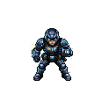
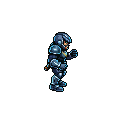
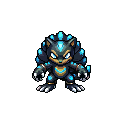
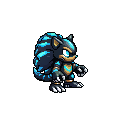
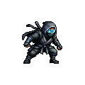
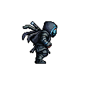

"귀여운 기하 블롭은 톤이 안 맞다 → 생물·휴머노이드 계열" 방향 반영. PixelLab으로 다크네온 톤 3종 실제 생성 (각 8방향 자동 — 정면 + 우향 표시). 전부 긴장된 네온 액션 톤 · 전투원으로 읽힘 · 진짜 게임 스프라이트.






당신이 "생물이 맞다"고 한 직감에 가장 직접 답하는 게 B입니다 — 귀여운 블롭과 정반대로 날렵하고 공격적인 다크 비스트라 긴장된 네온 액션 톤과 맞고, 다크+시안 발광이 브랜드 팔레트와 정합돼요. 셋 중 가장 독창적(흔한 휴머노이드·닌자 아님)이라 스토어에서도 눈에 띕니다. A는 가장 안전한 정통 액션, C는 무드는 최고지만 닌자가 다소 흔함.
참고: 지금 시안은 다소 디테일이 많은 편(124px). brief의 미니멀 톤에 맞춰 크기·디테일을 줄여 더 깔끔하게 조절 가능 — 방향 정하면 그 결로 다듬습니다.
형태 택1 (A 스트라이커 / B 크리처 / C 후드) — 또는 "B인데 이렇게 바꿔" 식 피드백. 정하면 그 1종으로 다크네온 정제 + idle/walk 애니 1개를 뽑아 "게임에서 진짜 이렇게 움직인다"까지 확인합니다.